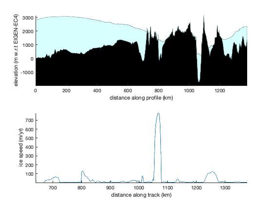

AMT Getting Started
There are an awful lot of polar datasets out there, and each one seems to be packaged in a different format. Antarctic Mapping Tools is a collection of functions intended to streamline the processes of importing, analyzing, and mapping Antarctica-related data.
Some tools in this package have been designed for daily use by you, while others are included as helper functions for the data-specific AMT plugins. This page walks you through the process of getting AMT installed on your computer and then highlights a few AMT tools that you may find useful.
Click here for a current list of functions in AMT.
Contents
How to get AMT working on your computer
The only tricky part about installing AMT is making sure Matlab can find it. Newer versions of Matlab have attempted to solve this part with the advent of "Toolbox" file formats, but you may not have a new version of Matlab, so here's how you can do it on any version of Matlab:
1. Download the AMT file from File Exchange.
2. Unzip the AMT file. # Move the unzipped AMT folder to wherever you want it to live. I made an AMT folder under MATLAB in my file structure specifically for AMT functions and plugins.
3. Add a path to the AMT folder from Matlab. You can do this by right-clicking on the folder and selecting Add To Path, but that will only work until you close Matlab. A more permanent solution is to create a file called startup.m in your MATLAB directory then inside startup.m include the line
addpath(genpath('/Users/chadgreene/Documents/MATLAB/AMT'));but of course you'll want to change the file path to wherever you put your AMT folder. All versions of Matlab know to look for and run a file called startup.m in the MATLAB directory when it starts up, so that's a place where you can also change settings, like setting the default axis font to Curlz MT.
4. Download plugins for specific datasets that you may need (optional).
Recommended plugins
AMT has grown bit-by-bit, and I realize the overall documentation hasn't necessarily kept up in terms of presenting a coherent picture of which plugins are important and which ones are lousy. If all the plugins and installation procedures feel overwhelming, don't worry about installing them all at once. Instead, wait until you need a specific type of data before looking to see which datasets are available as plugins for AMT. That way you'll know you have the latest and greatest version of any plugin you find.
If you're just getting started with AMT and you're eager to begin working with some common datasets, I recommend downloading the following plugins which I find quite helpful in my day-to-day analyses:
- Antarctic boundaries and masks from Mouginot et al. 2016. This is a simple dataset with continent-wide grounding lines, coast lines, and the outlines of every ice shelf which you can look up by name. The grounding lines and coastlines are useful for plotting, but this dataset also has something very useful in geospatial data analyses--masks. Functions like isiceshelf or isgrounded quickly tell you whether any particular point in your dataset is part of an ice shelf or part of the grounded ice sheet. I highly recommend getting this plugin and going through the examples in the documentation. Developing an intuition for how to use these masks will serve you well in the long run.
- MODIS Mosaic of Antarctica is that beautiful grayscale image of Antarctica you see in the background of so many figures. Turn up the contrast to see detailed surface features or turn down the contrast to get a nice contextual background that isn't too busy.
- BedMachine ice geometry. This dataset represents the current state-of-the-art.
- ITS_LIVE ice velocities from Gardner et al.
Accessing documentation
The AMT package is described in a Computers & Geosciences article found here: http://dx.doi.org/10.1016/j.cageo.2016.08.003. The article gives a general overview of the AMT architecture, but does not provide many specific examples of how to actually use AMT. To start, you can always access an up-to-date list of functions and data-specific plugins by typing
amt
into your Command Window. Or you can view the list of functions here. If you know what function you want to use, but you don't know how to use it, there are two ways you can access documentation from Matlab. One way is to use the help command, followed by the function name. For example,
help plotps
displays plain-text help in the Command Window. For formatted documentation with images, type amt followed by any function name. For example,
amt plotps
Location lookup
One of the most common questions I encounter in my research is, "where is such-and-such?" For example, where is Taylor Dome? The scarloc function searches the SCAR gazetteer and gives the geographic coordinates of about 25,000 places in Antarctica. Just type scarloc followed by the name of any place you want the geographic coordinates of. For example:
scarloc 'taylor dome'
ans =
-77.67 157.67
That tells us that Taylor Dome is located at (77.67°S,157.67°E).
Coordinate transformations
Two functions you might end up using frequently are ll2ps and ps2ll, which allow seamless transition between geographic (lat,lon) coordinates and polar stereographic (x,y) coordinates in meters. Polar stereographic coordinates are useful because they are equally spaced, meaning interpolation and regridding are best performed in polar stereographic coodinates. On the other hand, we're more likely to know locations by their geographic coordinates, so sometimes it makes more sense to use latitude and longitude instead of x and y.
The ll2ps and ps2ll functions can be used for a single point, line, or grid. As an example of a single point, if you want to know the polar stereographic "eastings" and "northings" of Taylor Dome, use ll2ps:
[easting,northing] = ll2ps(-77.67,157.67)
easting =
510894.57
northing =
-1243834.22
The easting and northing values indicate that in a standard projection, Taylor Dome is about 511 km to the right of the prime meridian and 1244 km below the y=0 line. So using trigonometry, Taylor Dome is
hypot(easting,northing)/1000
ans =
1344.67
about 1345 km from the South Pole.
Distance calculation
When you need to know the distance from one place to another, it's not too hard to convert geographic coordinates to polar stereographic coordinates and do the trigonometry as above, but AMT also offers a pathdistps function to streamline the process. The pathdistps function was designed to calculate distance traveled along a flightline, but could just as easily be used for two points like the South Pole and Taylor Dome. To get the distance traveled along a path from the South Pole (-90,0) to Taylor Dome (-77.67,157.67) enter the coordinates as arrays of lats and lons and specify that you want distance in kilometers:
pathdistps([-90 -77.67],[0 157.67],'km')
ans =
0 1366.38
That means, at your starting point at the South Pole, you've traveled 0 km, but taking a straight-line path to Taylor dome is about 1345 km.
Many AMT functions including pathdistps are smart enough to figure out whether you've entered geographic lat,lon coordinates or polar stereographic x,y coordinates in meters. So for example, we can get the same answer we got above by entering the eastings and northings
pathdistps([0 510894],[0 -1243834],'km')
ans =
0 1366.38
Making maps
So far this discussion of coordinate transforms and distance calculations has been a bit theoretical. So to give you an idea of what all this looks like in the real world, let's make a map.
One simple mapmaking function in AMT is plotps, which is designed to behave just like Matlab's plot function, except that you'll give it geographic (lat,lon) input coordinates, and plotps performs a polar stereographic coordinate transformation before plotting. We'll use Taylor Dome (77.67°S,157.67°E) again as an example, and place a blue circle on it:
plotps(-77.67,157.67,'bo')
Take a look at the values of the axes--they're on the order of 500,000 to a million meters. Those are the easting and northing values we got from ll2ps above. In other words, using plotps(lat,lon) is equivalent to manually transforming lat,lon values to polar stereographic coordinates via ll2ps, then using Matlab's plot function. As proof, let's overlay a red square on top of the blue circle we plotted above:
[easting,northing] = ll2ps(-77.67,157.67); hold on plot(easting,northing,'rs')

Above we discussed a straight-line distance from Taylor Dome to the South Pole. Let's see that straight line:
plotps([-90 -77.67],[0 157.67])
And of course we see that the South Pole is located at the origin of the polar stereographic Cartesian coordinate system.
In addition to plotps, AMT offers most of Matlab's standard plotting functions in *ps form. AMT has plotps, scatterps, surfps, pcolorps, etc. For example, perhaps you have some scattered bed elevation measurements at some locations near the South Pole. Just as you might use Matlab's scatter command, you can use scatterps:
mylat = [-89 -89.5 -88.3 -88 -88.5 -88.7];
mylon = [-50 -20 64 -85 123 -140];
myz = [-200 -115 -138 234 261 491];
scatterps(mylat,mylon,40,myz,'filled')
There's even a textps function, which works just like Matlab's text function, but instead of giving it x and y coordinates, you give it lats and lons. Even easier than using textps: if any location you want to label is in the SCAR database, it's easier to use scarlabel:
scarlabel({'South Pole','Taylor Dome'})
Even with labels, that map does look very map-like. Let's put a box around the map, then use mapzoomps to place an inset map in the upper-right-hand ('northeast' or 'ne') corner so we know where things are:
box on mapzoomps('ne')
And you may want some lines of longitude and latitude. Cartographers call that a graticule, so use graticuleps and specify that you want lines every two degrees of latitude and every 30 degrees of longitude. Also use scalebarps to place a graphical reference scale in the default lower left-hand corner:
graticuleps(-88:2:-76,-150:30:180) scalebarps
Data-specific plugins
The maps above are not very interesting in the absence of real data, but without AMT, importing some data formats into Matlab can be a headache. I've tried to simplify data importing through plugins developed for a number of datasets. Typically, each dataset-specific plugin contains one function to load raw data, one function for interpolation, and one function to easily add a layer to maps.
For example, a BedMachine plugin enables access to Morlighem's 500 m resolution bed elevation, surface elevation, and ice thickness datasets. If you want to load enough BedMachine bed elevation data to fill the map we made above, the bedmachine_data function lets you specify the spatial extents of the area of data you want, so here we use xlim and ylim as the spatial extents. The xlim and ylim are built-in Matlab functions that return limits of a current set of axes.
[bed,lat,lon] = bedmachine_data('bed',xlim,ylim,'geo');
Then use pcolorps to plot the BedMachine bed elevation as a pseudocolor plot:
pcolorps(lat,lon,bed);
Relief shading or "hillshading" can be a great way to give the viewer an intuitive understanding of what's going on topographically. AMT has a shadem which is designed to make relief shading easy. Depending on the resolution, extents, and vertical relief of your data, you might want exaggerated or muted relief shading, and you might want the light to come from a certain azimuth or elevation angle. The first time I call shadem on any map, I always specify the user interface ('ui') option, which lets me click around on the map and try out different light angles to get the settings just right. The 'ui' option looks like this:
shadem('ui')After a little bit of clicking around, I find that these shadem settings look alright:
shadem(3,[225 50])

Instead of importing the BedMachine data via the bedmachine_data function then plotting with pcolorps, we could have just used the bedmachine plotting function, which can plot Bedmachine data as pcolor or contour data. Here are some red contour lines corresponding to every 500 m of surface elevation:
bedmachine('surface','contour',500:500:5000,'r')
One nice thing about AMT is the way it lets you bring multiple datasets together. For example, plot surface velocities with the ITS_LIVE plugin:
itslive_quiver('color','black')
Beyond mapmaking
Making maps in Matlab is good for science, because scripted science is repeatable science. But AMT isn't just about maps. Let's take a look at the path from the South Pole to Taylor Dome. So far we've only been talking about the endpoints of the path, but for many types of analysis you may want measurements along the entire length of the path. The pspath function gives equally-spaced coordinates connecting any points. Let's say we want the coordinates of a line from the South Pole to Taylor Dome, made up of points spaced 150 meters apart.
[lati,loni] = pspath([-90 -77.67],[0 157.67],150);
With the 150 m resolution coordinates of the straight line from South Pole to Taylor Dome, we can use bedmachine_interp to find out, say, how high an airplane must fly to avoid hitting any mountains:
z = bedmachine_interp('surface',lati,loni);
It's common to plot pseudo-meridional paths relative to latitude, so we can do that here:
figure plot(lati,z) xlabel 'latitude' ylabel 'surface elevation (m)' box off axis tight
or we could have used pathdistps to plot surface elevation as a function of distance traveled:
d = pathdistps(lati,loni,'km'); plot(d,z) xlabel 'distance traveled (km)' ylabel 'surface elevation (m)' box off axis tight
But you know, it just so happens that the BedMachine Toolbox has a fancy function called bedmachine_profile, which is made specifically for plotting elevation profiles along a transect:
subplot(2,1,1) bedmachine_profile(lati,loni)
To see the BedMachine profile in context with ice surface velocities, use itslive_interp:
speed = itslive_interp('v',lati,loni); subplot(2,1,2) plot(d,speed) axis tight box off xlabel 'distance along track (km)' ylabel 'ice speed (m/yr)'
And wow, look how the ice flows through Byrd Glacier at around 1000 km! From this you can see how you might calculate ice volume flow rates by pairing ITS_LIVE velocity data with BedMachine ice thickness data. See the itslive_interp documentation for an example of calculating mass loss across the winding grounding line at Thwaites Glacier.
Author Info
Chad A. Greene of the Institute for Geophysics at the University of Texas in Austin wrote the Antarctic Mapping Tools package with help from David E. Gwyther. Email me if you have any questions, comments, bug reports, or suggestions.
If AMT is useful for you, please cite our paper as:
Greene, C. A., Gwyther, D. E., & Blankenship, D. D. Antarctic Mapping Tools for Matlab. Computers & Geosciences. 104 (2017) pp. 151-157 doi:10.1016/j.cageo.2016.08.003.